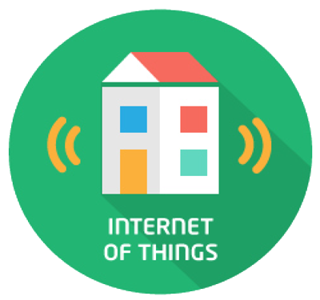
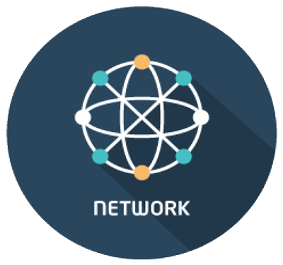

Data/Context Management
The enablers easing access, gathering, processing, publication and analysis of data at large scale, transforming it into valuable knowledge available to applications.
Internet of Things (IoT) Services Enablement
The bridge where FI services interface and leverage the ubiquity of heterogeneous, resource-constrained devices in the Internet of Things.
Advanced Middleware and Web-based User Interface
A set of enablers that make it easy to incorporate 3D & Augmented Reality capabilities in web-based user interfaces, plus the most efficient backend middleware ever.

Security
The mechanisms which ensure that the delivery and usage of services is trustworthy and meets security and privacy requirements..
Interface to Networks and Devices (I2ND)
The enablers making it easy to take the most of underlying network infrastructure capabilities.
Architecture of Applications / Services Ecosystem and Delivery Framework
The framework to co-create, publish, cross-sell and consume applications/services, addressing all business aspects.
Cloud Hosting
The fundamental layer which provides the computation, storage and network resources on top of which services are provisioned and managed.